高校１年の夏休み。阪急のパリーグ優勝もほぼ見えてきてた夏休みの後半に、名鉄を泊りがけで訪問しました。
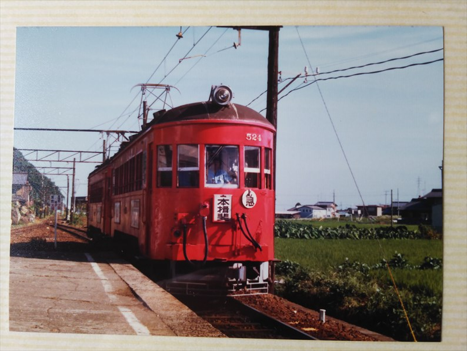
昭和５９年８月２０日（月）
名古屋地区まで何で行ったか記憶にございません。
青春１８かな？近鉄特急でなかったことは間違いあ
りません。
本揖斐駅かな。目的のひとつはこの市内線の急行で
す。こんな細身のフォルムやのに、クロスシートと
いうのがいかにも急行車両でした。
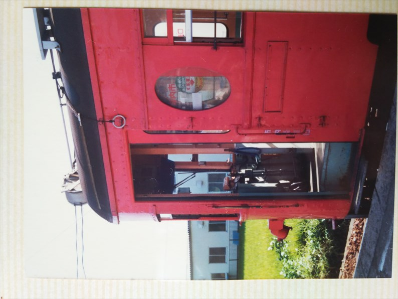
この丸窓がいいんすよね。
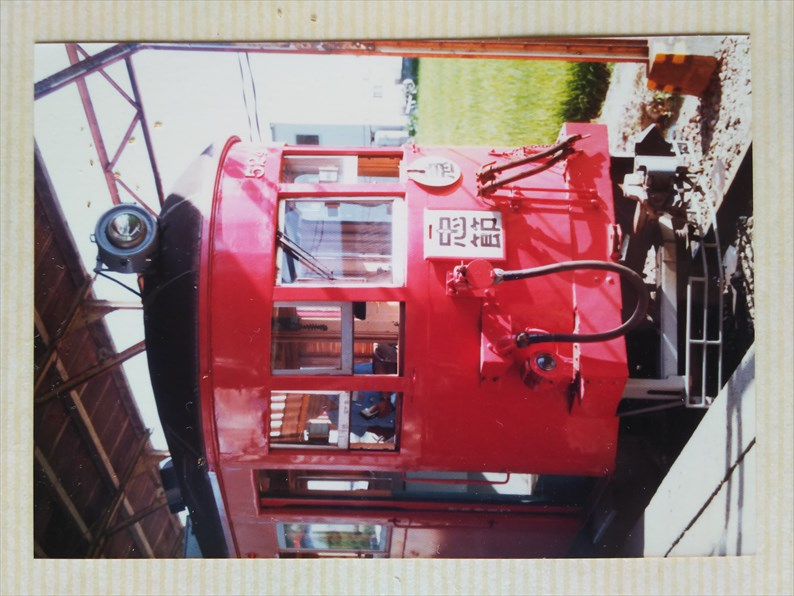
今は岐阜駅前に保存されています。
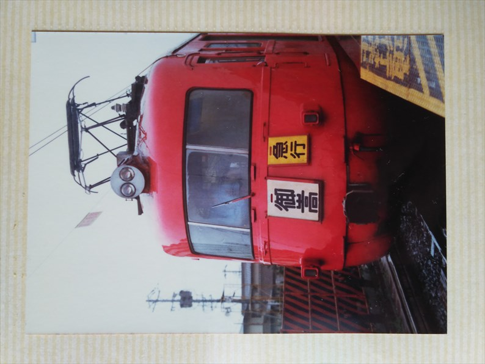
昭和５９年８月２１日（火）
で、これが最大の目的の「いもむし」です。
なんとか運用の情報を調べて、この列車に入るはず！と思って実際来た
時は感動しました。
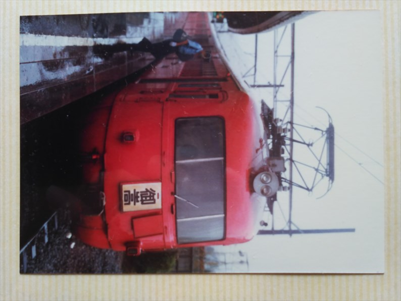
犬山駅か、可児駅と思われます。犬山から可児まで乗ったような記憶
が・・・。御嵩までは行ってません。
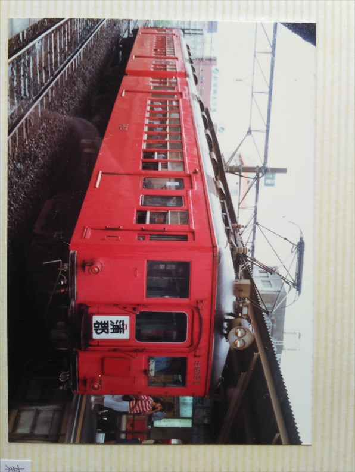
新安城。この頃はこういった渋めの車両がたくさん
走ってました。
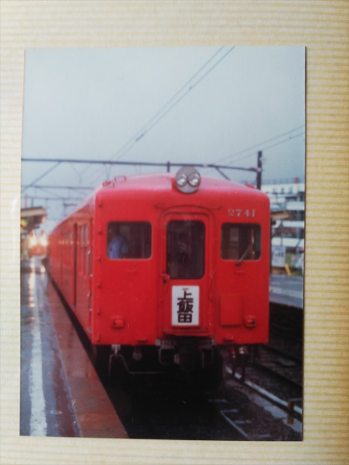
犬山かな？
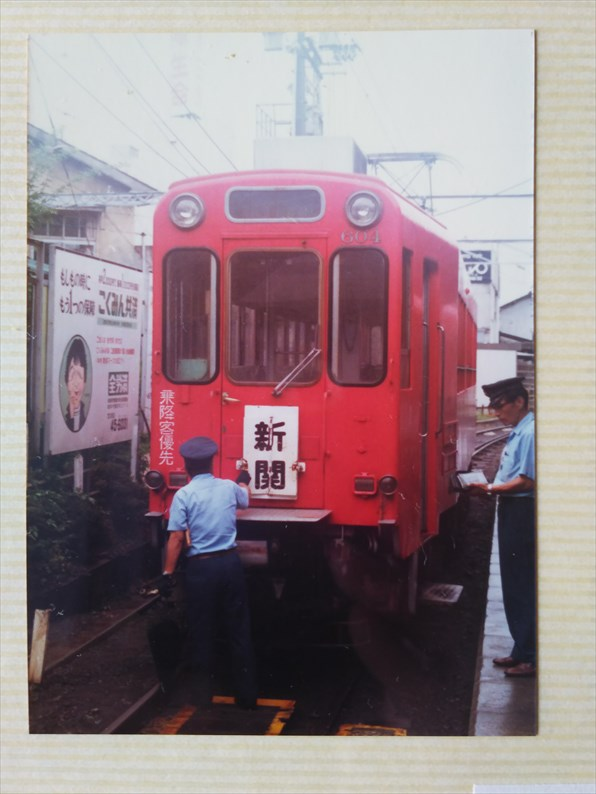
新岐阜駅に停まる市内線。まさか岐阜からチンチン電車がなくなるとは、
想像もできてませんでした。
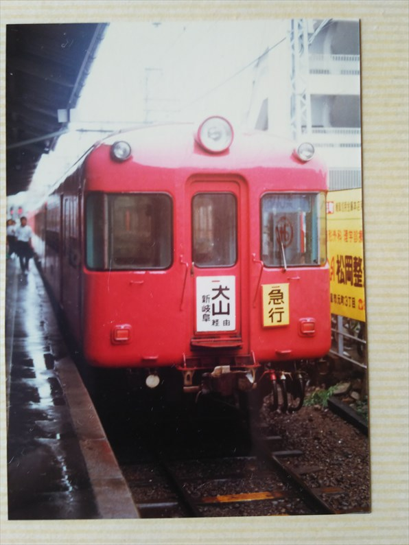
当時はダサい車両と思いましたが、今見るとあいらしいフォルムですね。
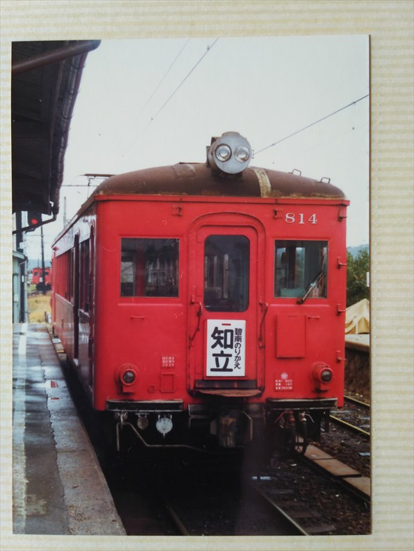
吉良吉田駅。
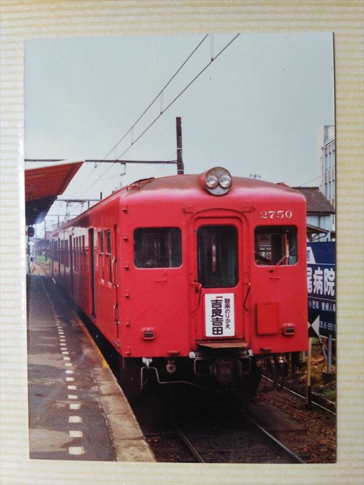
碧南駅。吉良吉田から碧南までの区間は、２００４年に廃止になって
しまいました・・・
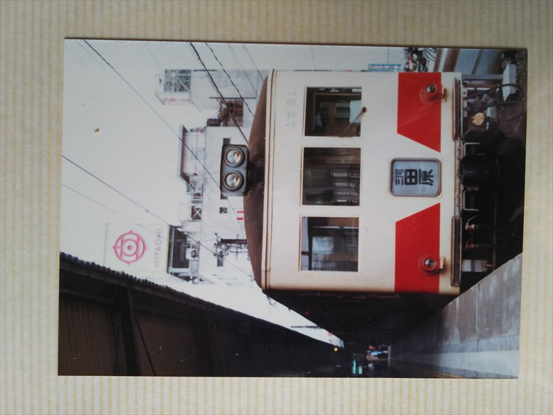
昭和５９年８月２２日（水）
豊橋駅。超ダサいっすね。多分元名鉄車です。
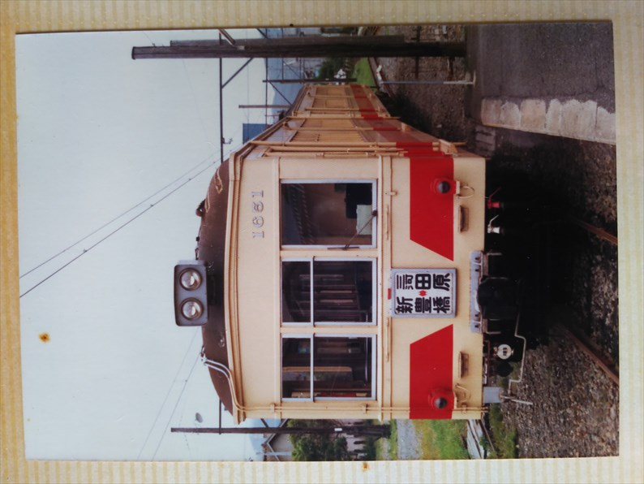
これはどこで撮ったんんやろ？終点の駅かな？
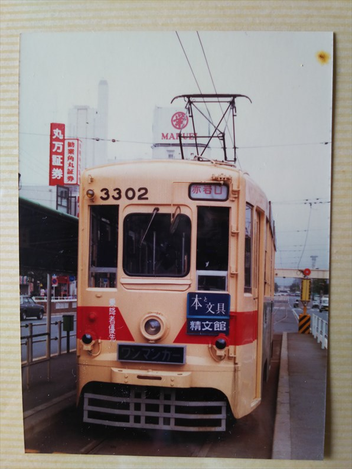
市内線の当時の豊橋駅前駅。今は文字通りの駅前に移動しています。
当時、２年前に珍しく支線が出来て、乗ってみようと思って乗った記憶が
あります。
今、調べてみると、元金沢のチンチン電車っすね。
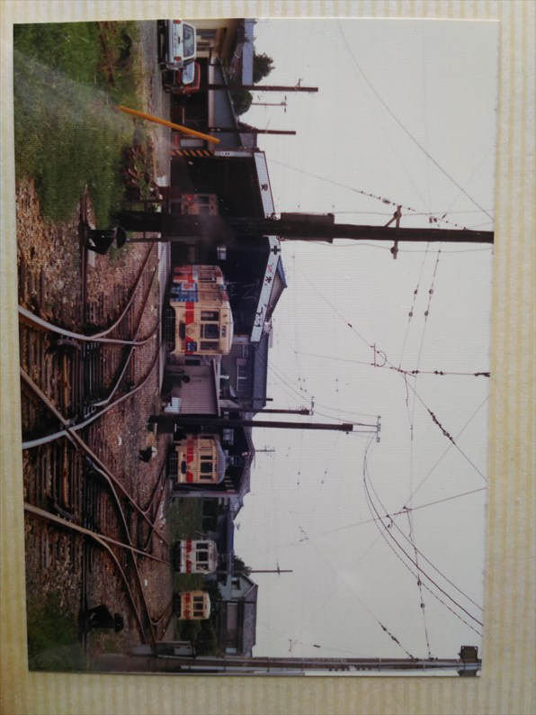
わざわざ車庫まで行ってる。